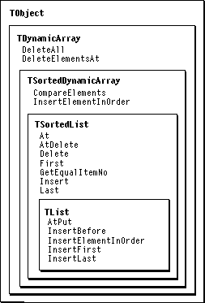
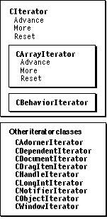

Legacy Document
Important: The information in this document is obsolete and should not be used for new development.
Important: The information in this document is obsolete and should not be used for new development.


Overview
A list is a data structure that stores a variable number of items of similar types. MacApp provides classes for creating and manipulating lists, allowing your application to use lists without having to implement the low-level details. MacApp's list classes and methods are shown in Figure 25-1.Figure 25-1 List classes and methods

MacApp's list classes use a dynamic array model. Each item in a list has a unique index--you can access the items in a list by index or by standard list-traversal methods. The
TSortedListclass and its descendants can store only references to items that descend from theTObjectclass. Other MacApp-defined list classes, such asTHandleList, store generic references that can be used to deal with a variety of developer-defined data types.Iteration is a general-purpose mechanism for traversing the items in a list. MacApp provides the
CIteratorclass and many specialized subclasses that operate on various types of lists. Iteration classes can traverse the items in a list without knowing the exact details of the data structures involved.Figure 25-2 shows MacApp's iteration classes and methods.
Figure 25-2 Iteration classes and methods

Working With Lists of Objects
MacApp'sTSortedListandTListclasses provide extensive capabilities for working with lists of objects that descend fromTObject. TheTSortedListclass includes methods and fields for processing an ordered list in which each element is a reference to an object. TheTListclass is a subclass ofTSortedListthat doesn't sort the objects.TListis used widely by MacApp, and it can be a valuable tool in your application as well.
- Note
- This section describes the
TSortedListandTListclasses, which refer to objects. TheTSortedHandleListandTHandleListprovide virtually identical operations on handles.
Creating a List
MacApp provides theNewListroutine to create and initialize a newTListobject. The convenience routineNewAllocatedListlets you create a newTListobject and at the same time specify the number of elements for which storage should be allocated. Each of these routines callsFailureif the list cannot be allocated.Adding an Object to a List
You add an object to aTListwith a method that inserts a reference to the specified object into the list. The insertion method callsFailureif an attempt is made to insert the reference at an index that is out of range.The following insertion methods are available:
MacApp's iteration mechanism, described beginning on page 576, allows you to iterate over a list correctly, even as items are added to the list.
AtPut- The
AtPutmethod replaces the object reference at the specified position with a reference to the new object, without freeing the old object.Insert- For the
TListclass, theInsertmethod inserts the object reference at the end of the list. For theTSortedListclass, the parent class ofTList,Insertadds the object reference in sorted order, based on the list'sComparemethod.InsertBefore- The
InsertBeforemethod inserts the object reference before the reference at the specified index. If the index is equal to 1, the object reference is inserted at the head of the list.InsertFirst- The
InsertFirstmethod inserts the object reference at the front of the list and makes its index equal to 1.InsertLast- The
InsertLastmethod inserts the object reference at the end of the list.Deleting an Object From a List
MacApp's list classes provide a number of methods for deleting an item from a list--not all are available in every list class:
MacApp's iteration mechanism, described beginning on page 576, allows list iteration to proceed correctly, even as items are deleted from the list.
AtDelete- The
AtDeletemethod deletes the object reference at the specified index position.Delete- The
Deletemethod deletes the first reference to the object in the list. The object itself is not freed.Deletedoes nothing if the object is not found in the list.DeleteAll- The
DeleteAllmethod deletes every element from the list, but does not free any of the objects.- IMPORTANT
- These methods delete a reference from the list--they do not free any memory occupied by the referred-to item itself. See the section "Freeing a List" (page 576) for more information on freeing a list and the items it references.

Finding an Object in a List
TheTListclass provides a number of methods for finding an object in a list. You can find an object that is the same as another object, or find a specific object by its position in the list.The following methods are available:
At- The
Atmethod returns the object reference at the specified index.First- The
Firstmethod returns the first object reference in the list. It returnsNULLif the list is empty.Last- The
Lastmethod returns the last object reference in the list. It returnsNULLif the list is empty.GetEqualItemNo- The
GetEqualItemNomethod uses the object'sCompareObjectmethod to test for equality. This allows object equality to be determined by the object. An "equal" object may be found, even though the object being looked for is not, in fact, identical to the one found.GetIdentityItemNo- The
GetIdentityItemNomethod uses theoperator==function to compare items in the list to the item being searched for. Theoperator==function is overloaded inTObject, where it calls theIsEqualmethod, which does nothing inTObject. As a result,GetIdentityItemNodoes nothing unless you override theIsEqualmethod.- IMPORTANT
- To use the
GetIdentityItemNomethod, you must override theIsEqualmethod with a version that can identify equality between the items stored in your list.Freeing a List
TheTDynamicArray::Freemethod frees the memory occupied by a list itself but does not free the items referred to. You can call theFreeAllmethod to free each of the objects in a list of object references (TSortedListand descendants) or each of the handles in a list of handle references (TSortedHandleListand descendants). The list itself becomes empty but is not freed. You can call theFreeListmethod to free each object in the list and then free the list as well.Iteration
Iteration allows you to traverse an array or list and perform some operation on each element. MacApp provides theCIteratorclass and several specialized subclasses for this purpose. For example, theCArrayIteratorclass iterates through an array of indexed items, thecMenuIteratorclass iterates through the menu handles in a menu list, theCBehaviorIteratorclass iterates through the behaviors that are associated with an event handler, and theCSubViewIteratorclass iterates through a list of subviews belonging to a view.Each iterator class is defined for use with a specific kind of list (for example,
CObjectIteratorworks withTSortedList) and can iterate correctly over the items in the list. This allows iteration to continue correctly, even as items are added to or deleted from a list. Iteration can be performed with both sorted and nonsorted lists and can be performed in either the forward or backward direction.The most important base class for iterators is the
CArrayIteratorclass. Like several of its subclasses, theCArrayIteratorclass provides multiple constructor methods for your convenience. The constructor methods ofCArrayIteratorcall the initialization method,IArrayIterator, which sets the iterator's fields, including the following:
The
fCurrentIndex- The
fCurrentIndexfield specifies the current index during iteration.fDynamicArray- The
fDynamicArrayfield refers to the dynamic array for the list that is iterated through.fHighBound- The
fHighBoundfield is the upper bound for forward iteration through the list.fIterateForward- The
fIterateForwardfield is set toTRUEfor forward iteration through the list and toFALSEfor backward iteration.fLowBound- The
fLowBoundfield is the lower bound for backward iteration through the list.CArrayIteratorclass also provides methods for inserting and deleting items in the list during iteration so that the iteration process is not invalidated by the change to the list. It includes the following methods:
DeleteElementAt- The
DeleteElementAtmethod adjusts the iteration index to account for the deleted element.InsertElementBefore- The
InsertElementBeforemethod adjusts the iteration index to account for the added element.